CS 463G & CS 663
(Intro to) AI
Lecture 35: Generative Machine Learning
Fall 2026
Generation and Classification
A discriminative model predicts a label or decision from an input. The saved classifier below labels existing handwritten-digit images.

A generative model learns a data distribution and produces random draws called samples. For handwriting, it can produce another plausible digit image.
Write p_\theta(x) for the model’s distribution over images x; \theta denotes its learned parameters.
Classification asks for a label. Generation asks for an example drawn from a learned distribution.
A Tiny Image Distribution
Our toy world contains three possible 2\times2 binary images: each pixel is either 0 (white) or 1 (filled).
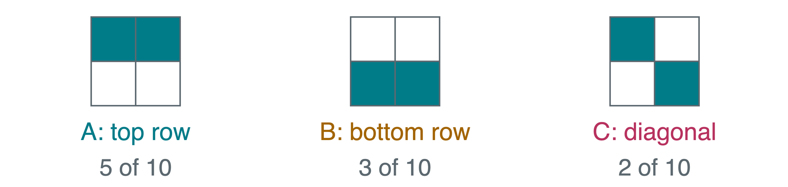
The empirical distribution uses observed frequencies. In these ten examples,
p_{\text{data}}(A)=0.5,\qquad p_{\text{data}}(B)=0.3,\qquad p_{\text{data}}(C)=0.2.
A good fit captures the frequencies, not just the most common pattern. A new random draw can repeat an observed image.
Sampling Instead of Taking the Maximum
Draw u uniformly from [0,1): equal-length intervals are equally likely. Use intervals with lengths 0.5, 0.3, and 0.2.
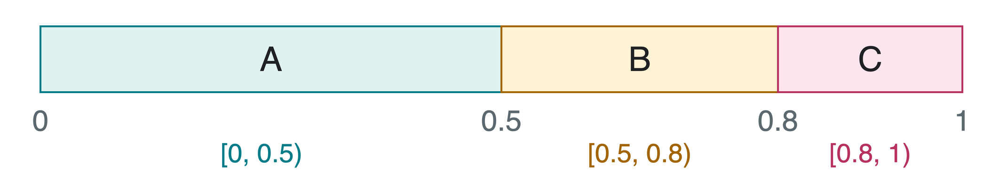
Which images do u=0.12, u=0.72, and u=0.93 select?
A, B, and C. Always choosing the maximum-probability image would produce only A, losing the other valid patterns.
Likelihood and Training Loss
Likelihood measures how much probability a model gives the observed data. Suppose x_1,\ldots,x_N are N independent training images.
A common loss is average negative log-likelihood (NLL):
L(\theta)=-\frac{1}{N}\sum_{i=1}^{N}\log p_\theta(x_i).
Use natural logarithms. Lower NLL means a better fit to these observations.
| Candidate model | p_\theta(A) | p_\theta(B) | p_\theta(C) |
|---|---|---|---|
| M_1 | 0.5 | 0.3 | 0.2 |
| M_2 | 0.8 | 0.1 | 0.1 |
Does giving the most common image more probability make M_2 a better fit to the whole dataset?
A Likelihood Comparison
The dataset has five As, three Bs, and two Cs. Both models must account for every observed pattern.
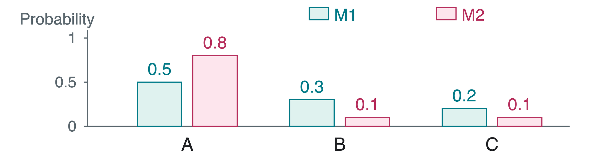
L(M_1)=-(0.5\log0.5+0.3\log0.3+0.2\log0.2)\approx1.030, L(M_2)=-(0.5\log0.8+0.3\log0.1+0.2\log0.1)\approx1.263.
M_1 fits better. M_2 underweights B and C. Assigning zero probability to an observed pattern would make this discrete NLL infinite.
Autoencoders and Latent Codes
An autoencoder learns to reconstruct its input. Its encoder compresses image x into a latent code z, a hidden representation. Its decoder maps that code back to an image \hat{x}.
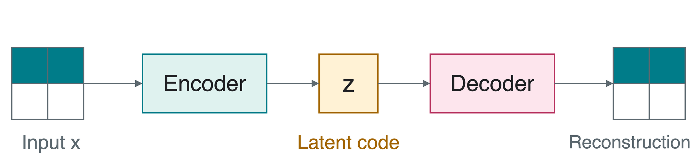
z=f_\phi(x),\qquad \hat{x}=g_\theta(z).
\phi and \theta are encoder and decoder parameters. Reconstruction loss measures how well \hat{x} matches x.
A useful representation can compress an image without assigning human-readable meanings to individual code coordinates.
Why Random Codes Can Fail
An ordinary autoencoder trains its decoder on codes produced by the encoder. Arbitrary random codes may land elsewhere.
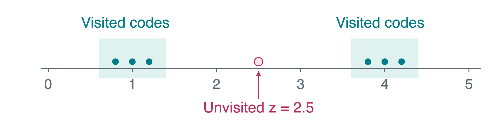
If a random code lands at z=2.5, has the reconstruction objective taught the decoder what to do there?
Not necessarily. Good reconstruction at visited codes does not guarantee meaningful images at unvisited codes. Generation needs a useful distribution from which to draw codes.
Variational Autoencoders
A variational autoencoder (VAE) learns an encoder distribution q_\phi(z\mid x) over latent codes, rather than a single code.
For a one-dimensional normal (Gaussian) distribution \mathcal N(\mu,\sigma^2), \mu is the mean and \sigma>0 the standard deviation, or spread.
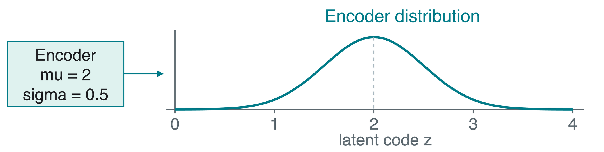
Draw \epsilon\sim\mathcal N(0,1), then z=\mu+\sigma\epsilon. If \mu=2, \sigma=0.5, and \epsilon=-1.2, what code goes to the decoder?
z=2+0.5(-1.2)=1.4.
Diederik P. Kingma and Max Welling (2013), Auto-Encoding Variational Bayes.
VAE Training and Generation
A prior p(z) is the chosen latent distribution before seeing an input. Here use \mathcal N(0,1): mean 0, standard deviation 1.
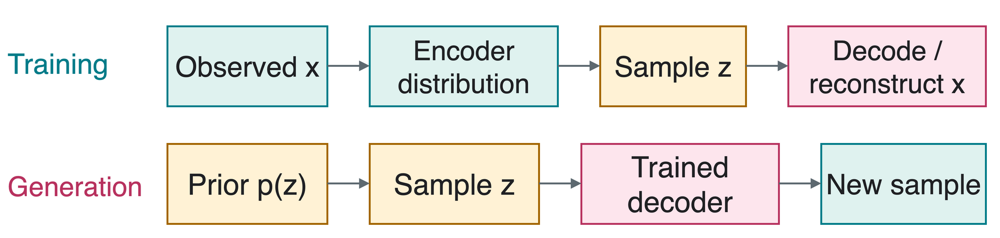
The decoder distribution p_\theta(x\mid z) describes possible images given code z. A standard VAE loss balances
\underbrace{\mathbb E_{z\sim q_\phi(z\mid x)}[-\log p_\theta(x\mid z)]}_{\text{reconstruction}} +\underbrace{D_{\text{KL}}(q_\phi(z\mid x)\|p(z))}_{\text{prior matching}}.
Kullback-Leibler (KL) divergence penalizes distribution mismatch. The expectation averages over sampled encoder codes.
Generative Adversarial Networks
A generative adversarial network (GAN) trains two networks with competing goals:
- The generator turns random code z into an image.
- The discriminator learns to distinguish training images from generated ones. The generator learns to make that distinction harder.
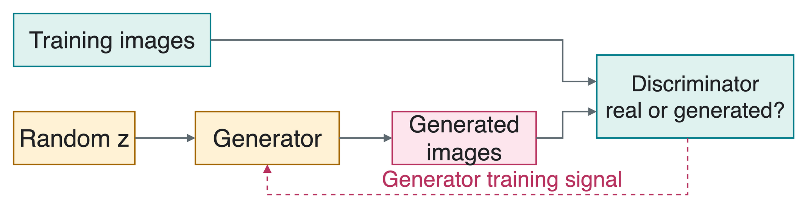
After training, generation uses the generator and a random code. It does not require an encoder or discriminator.
Ian Goodfellow et al. (2014), Generative Adversarial Networks.
Diffusion: Noise and Denoising
A diffusion model learns to generate by reversing gradual corruption with noise. Denoising means estimating cleaner structure from a noisy input.
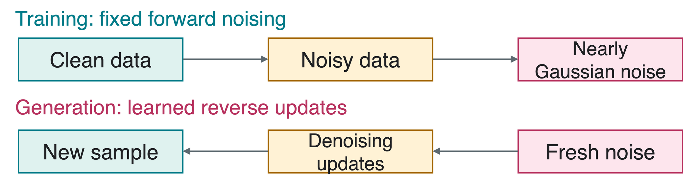
A denoising diffusion probabilistic model (DDPM) is one influential formulation. Its forward noise levels follow a chosen schedule.
Generation begins with fresh noise. It produces a plausible sample, not a unique original image hidden in that noise.
Jonathan Ho, Ajay Jain, and Pieter Abbeel (2020), Denoising Diffusion Probabilistic Models.
One Forward Noising Step
Let t be the step, x_{t-1} the previous signal value, and \beta_t\in(0,1) the chosen noise variance for this step:
x_t=\sqrt{1-\beta_t}\,x_{t-1}+\sqrt{\beta_t}\,\epsilon, \qquad \epsilon\sim\mathcal N(0,1).
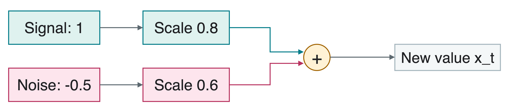
For x_{t-1}=1, \beta_t=0.36, and sampled noise \epsilon=-0.5:
x_t=0.8(1)+0.6(-0.5)=0.5. Signal shrinks while noise enters. Apply this componentwise to image or latent vectors; noisy values need not remain in [0,1].
Training a Noise Predictor
During training, the clean image, chosen step t, and added noise \epsilon are known. The network \epsilon_\theta(x_t,t) predicts the noise from the noisy image x_t and its step.
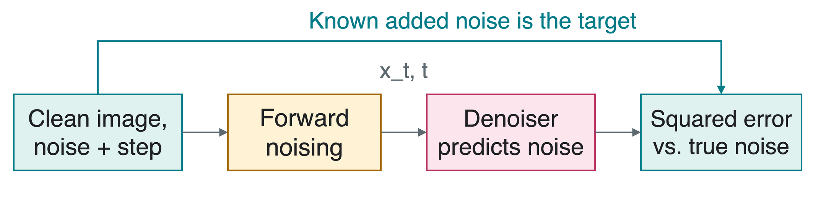
A common noise-prediction loss is
L_{\text{noise}}=\mathbb E\!\left[\|\epsilon-\epsilon_\theta(x_t,t)\|^2\right].
The expectation averages over training images, noise levels, and random noise. The squared norm sums squared errors over components.
Diffusion Generation Loop
A noise schedule specifies the noise levels across T steps. A sampler uses that schedule and the trained denoiser to generate an image.
ReverseStep applies the sampler’s update, which may also add fresh noise. It is not simply subtraction of the prediction. The denoiser’s parameters stay fixed during generation.
Training uses clean examples to create learning targets. Generation uses fresh noise and learned updates, with no clean input image.
Conditional Generation
Conditional generation supplies a condition c and models p_\theta(x\mid c) instead of p_\theta(x).
| Condition c | Possible output x |
|---|---|
| Digit label 7 | A handwritten seven, with variable stroke and slant |
| Text: “a red bicycle” | An image matching the description |
| A partial sentence | A plausible continuation |
In conditional diffusion, the denoiser receives the noisy image, step, and condition: \epsilon_\theta(x_t,t,c).
The condition guides which distribution to sample. It does not remove randomness or guarantee that every output follows the request.
Quality and Coverage
Quality asks whether individual samples look valid. Coverage asks whether the generator represents the variety of valid cases.
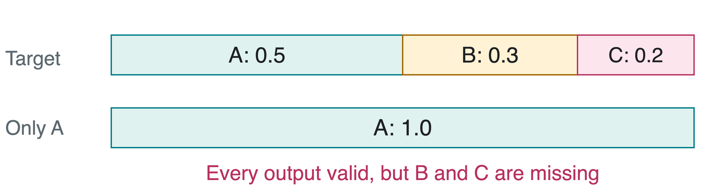
Mode collapse means producing too little of the data’s variety, for example generating only A instead of all three patterns.
A gallery’s single best image cannot establish coverage. Compare sample frequencies and inspect failures, not just selected successes.
Memorization and Evaluation
Held-out data was not used in training. Memorization means learning particular training examples in detail, potentially copying them when generating.
| Check | What it can reveal |
|---|---|
| Held-out NLL, when available | Probability assigned to new observations |
| Inspect samples and nearest training images | Artifacts, near copies, or sensitive details |
| Check conditions and sample frequencies | Missed requests or poor coverage |
| Human ratings with explicit criteria | Perceived quality and usefulness |
One common image metric is Frechet Inception Distance (FID). It compares statistics of real and generated images after a feature network converts each image into a vector.
No single score checks everything. Repeated toy patterns are expected; realistic-looking copies of a real training set still need scrutiny.
Quick Check
- With our sampling intervals, which image does u=0.80 select?
- Does VAE generation require an input image and its encoder?
- Does a diffusion sampler recover a unique original image from fresh noise?
1. C. Its interval begins at 0.8 and ends just before 1.
2. No. Draw a code from the prior and use the trained decoder.
3. No. Learned reverse updates produce a plausible draw from the modeled distribution.
Takeaways
- Generation models a distribution, including less frequent valid cases.
- Sampling preserves variety that maximum-probability selection can lose.
- A VAE trains a latent-variable model with reconstruction and prior matching.
- A GAN learns through competing generator and discriminator objectives.
- Diffusion learns denoising predictions and uses a sampler to generate from noise.
- Evaluate quality, coverage, condition following, and possible memorization together.